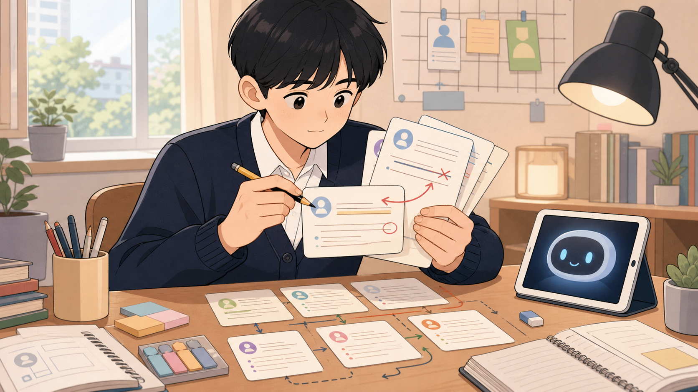
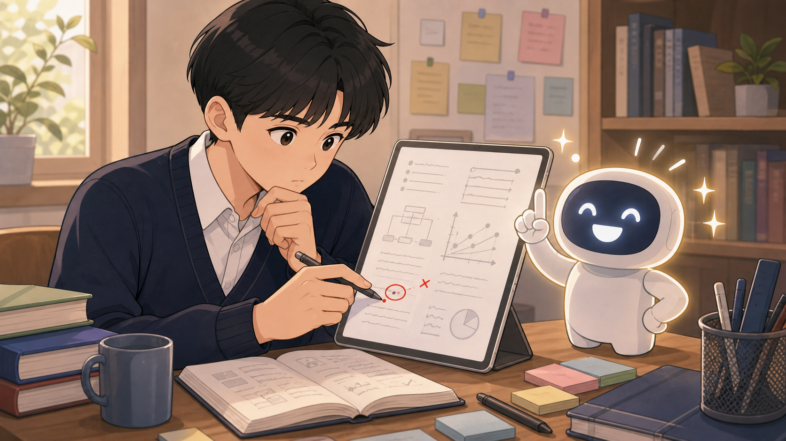

같은 챗GPT를 써도 어떤 아이는 더 똑똑해지고, 어떤 아이는 더 멍청해집니다. MIT·마이크로소프트·하버드 — 세계 최고 연구 기관 5곳이 같은 결론에 도달했어요. 그 차이는 단 6가지로 갈립니다. 학부모님과 중고생이 5분 안에 이해할 수 있게 풀었습니다.
충격적인 실험 1편 → 6가지 비밀 → 가장 무서운 함정 → 우리 아이는 어떻게?
54명을 세 그룹으로 나눠 4개월 동안 뇌가 어떻게 변하는지 측정한 실험.
2024년 6월, 미국 MIT 미디어 랩이 발표한 연구가 학계를 흔들었습니다. 연구진은 학생 54명을 세 그룹으로 나눴어요.
4개월 동안 네 번에 걸쳐 글을 쓰게 했고, 그동안 뇌의 신경 활동을 측정했습니다. 결과는 충격적이었어요.
더 충격적인 건 그다음입니다. 네 번째 실험에서 연구진은 챗GPT 그룹에게 도구를 빼앗고 자기 머리로만 쓰라고 했어요. 그런데도 그들의 뇌는 여전히 약한 상태에 머물렀습니다. 쌓인 빚이 한 번에 회복되지 않은 거예요.
반대로 처음에 아무 도구 없이 쓰던 학생들에게 챗GPT를 줬더니, 오히려 더 다양한 뇌 영역이 활성화되고 더 좋은 질문을 만들었습니다.
MIT·마이크로소프트·CMU·하버드·BCG 다섯 곳이 같은 결론에 도달했어요.
왜 중요한지 · 어떻게 길러주는지 · 어떤 비유로 이해할 수 있는지.
2025년 마이크로소프트와 카네기멜런대학이 직장인 39명의 챗GPT 사용 936건을 분석했어요. 결과는 분명했습니다 — AI를 너무 믿는 사람일수록 생각이 줄어들고, 자기 분야에 자신 있는 사람일수록 AI 답을 꼼꼼히 검증했습니다.
더 신기한 건, AI를 만든 사람들조차 AI 내부에서 무슨 일이 벌어지는지 정확히 모른다는 사실이에요. 엔지니어들은 AI를 '만든' 게 아니라 '길러낸' 거니까요. 식물을 키우는 것과 비슷합니다 — 어떻게 자라는지 정확히는 모르지만, 잘 자라게 환경을 만들어주는 거죠.
마이크로소프트 연구의 핵심 발견은 이거였어요. AI를 쓰면서 생각이 줄어든 이유는 게으름이 아니었습니다. AI 답이 맞는지 검증할 능력 자체가 부족할 때, 사람들은 비판적 사고를 포기합니다. 자기가 뭘 모르는지를 모르면 AI 앞에서 그냥 무릎을 꿇어버리는 거예요.
반대로 메타인지가 높은 학생은 모르는 부분만 정확히 AI에게 묻고, 그 답을 자기 말로 다시 정리하면서 진짜 학습이 일어납니다.

그리고 흥미로운 점 — 좋은 질문을 만드는 행위 자체가 사고의 핵심입니다. AI는 사람과 다르게 생각하기 때문에 우리가 모든 것을 '명시적으로' 풀어 써야 해요. 그 풀어쓰는 과정에서 우리 자신의 생각도 함께 명료해집니다.

모든 연구가 한목소리로 강조하는 지점이 바로 이거예요 — AI를 신뢰할수록 비판적 사고는 줄어들고, 자기 자신을 신뢰할수록 비판적 사고가 늘어난다. 의심하는 습관이 사고의 가장 큰 방패막이입니다.
여기에 한 가지를 더하고 싶어요 — "나를 키우는 일"은 계속 나의 일로 남겨두어야 합니다. 독서, 사색, 깊은 대화, 직접 부딪히는 경험. 이것까지 AI에게 위임하는 순간, 우리는 AI를 쓸수록 멍청해지는 사람이 됩니다.
놀라운 사실: 좋은 AI일수록 사람이 더 게을러집니다.
하버드 비즈니스 스쿨이 보스턴 컨설팅 그룹(BCG)의 컨설턴트 758명을 대상으로 한 실험. 결과는 이랬어요.
더 충격적인 결과 — 같은 연구진이 채용 담당자 181명을 대상으로 한 다른 실험에서, 성능 좋은 AI를 받은 담당자가 성능 나쁜 AI를 받은 담당자보다 더 안 좋은 성적을 냈어요. "이 AI는 똑똑하니까 그냥 믿자" → 의심 사라짐 → 결과 악화.
"AI 시대에 사고력 잃지 마라"는 좋은 말이지만, 어떻게? 그 답이 세특 노트입니다.
세특(세부능력 및 특기사항) 소크라테스 시스템은 — 앞서 본 6가지 습관을 학생이 매주 글로 직접 적어내게 만드는 학습 시스템이에요. 추상적인 말이 아니라 손에 잡히는 도구. 각 비밀이 어떤 세특 도구와 연결되는지 보세요.
| 01자기 분야 잘 알기 | → | 만다라트 (한 단원을 8가지 세부 주제로 깊이 파기) |
| 02AI 작동 원리 | → | 내적·외적 연결사 (개념과 개념을 잇는 연쇄 사고) |
| 03자기 객관화 (메타인지) | → | 실수노트 (왜 틀렸나·어디까지 알았나 기록) |
| 04잘 묻기 | → | 질문 카드·도식화 (페르소나·제약·맥락을 명시) |
| 05의심하기 | → | 평가자 가독성 (선생님이 한눈에 검증할 구조) |
| 06AI 없는 시간 | → | 사색·직접 경험 (주간 의도적 unplug 시간) |
한국어 내레이션 1분 30초 — 핵심만 모았습니다.
5개 기관 연구 + 책 2권 + 영상 1편
YOUTUBE · 13:24
독서연구소 — "AI를 쓸수록 지능이 올라가는 사람의 특징들 (feat. 과학적)" (2026-05-05)
VIEW
BOOK · 2026
엘리에저 유드코스키 · 네이트 소아레스 — 《AI 신의 탄생 인간의 종말》
VIEW
BOOK · 2024
이선 몰릭 — 《듀얼 브레인》 (Co-Intelligence)
VIEW
PAPER
MIT 미디어 랩 — 챗GPT 사용자의 인지 부채 누적 (54명, 2024)
REF
PAPER
마이크로소프트 · CMU — AI 신뢰 vs 비판적 사고 (39명, 936건, 2025)
REF
EXPERIMENT
하버드 · BCG · 델라쿠아 — "Navigating the Jagged Technological Frontier" (758명)
REF
이 페이지는 독서연구소 채널 영상(2026-05-05)의 내용을 1차 출처로 인용·요약·재구성한 것이고, 세특 소크라테스 시스템과의 매핑은 페이지 저자(daniel8824-del)의 해석입니다.
각 책·논문 원본의 정확한 문장과 데이터는 출처를 직접 확인해주세요.